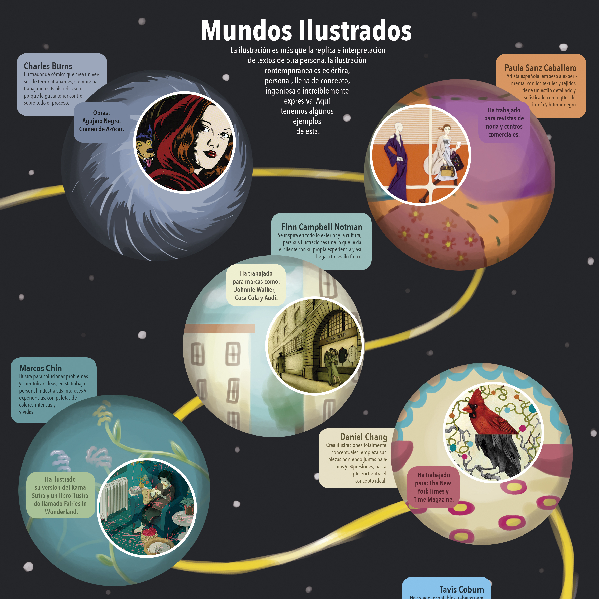
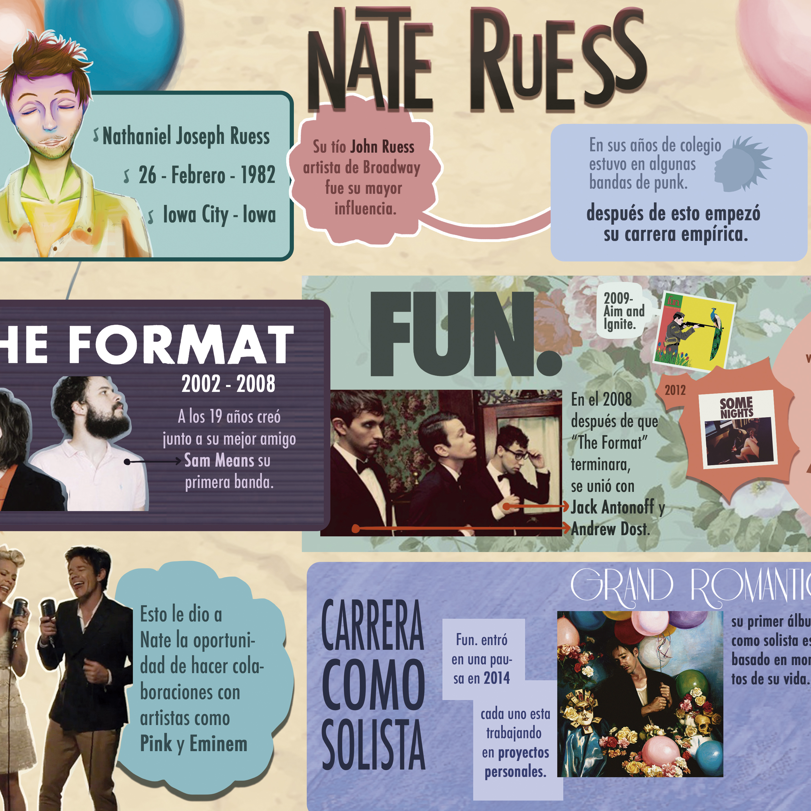
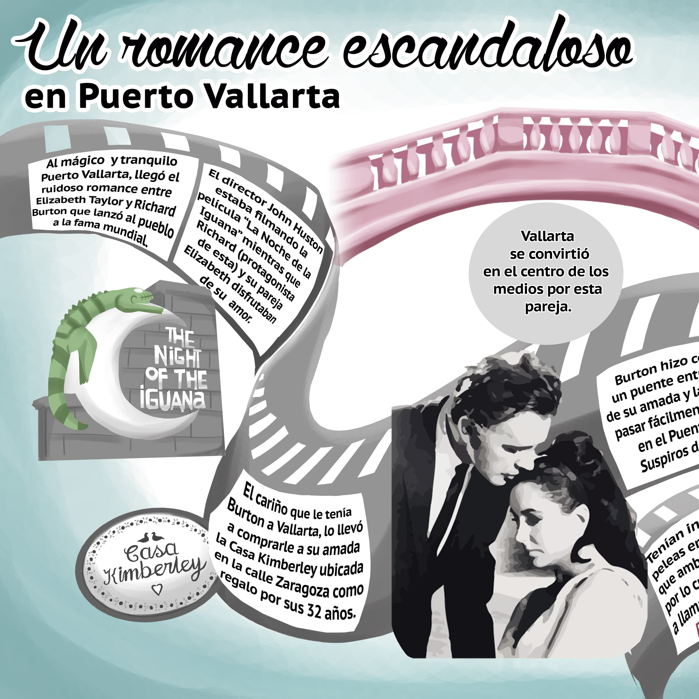
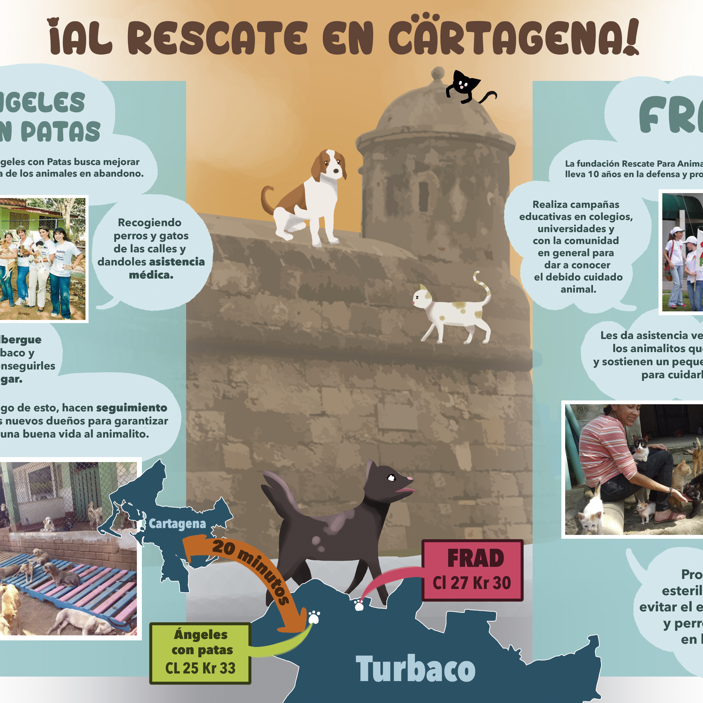
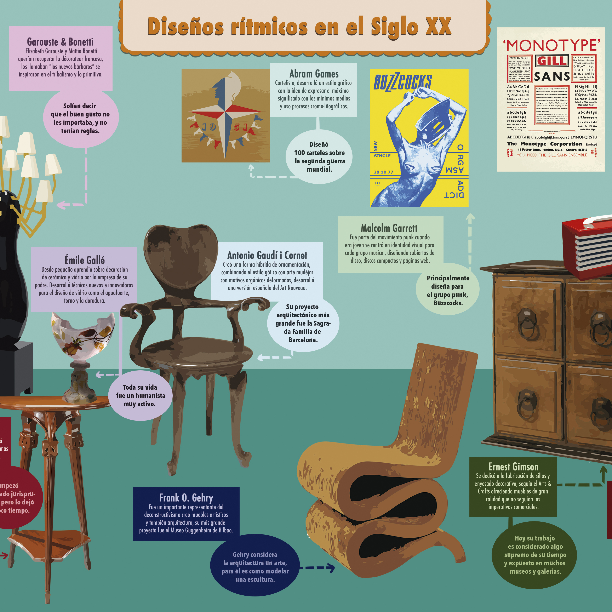
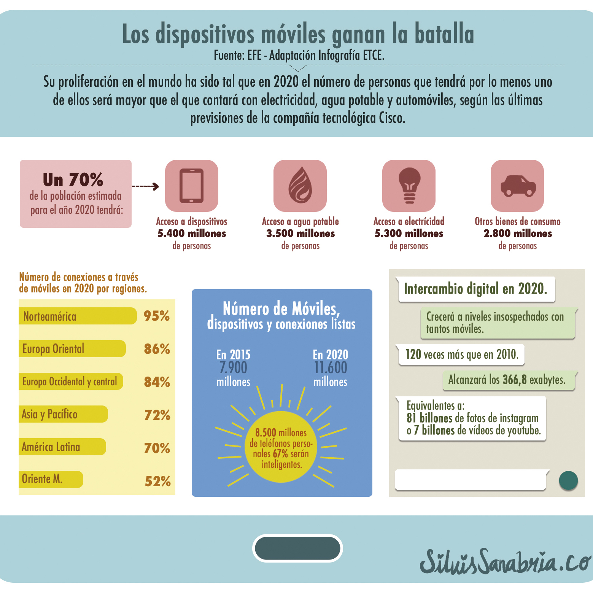

Inicio
¿Quién soy yo?
Portafolio
Lápices de Colores
Tintas
Digital
¿Quién Soy?
Algo más personal...
Fanarts
Reto 30 dias
#inktober2015
¡Contáctame!
Infografías
Anna Karenina

Mundos Ilustrados
Bicitaxis

Nate Ruess

Puerto Vallarta

Al Rescate en Cartagena

Diseños Rítmicos del Siglo XX

Dispositivos Móviles
Autores de Manga